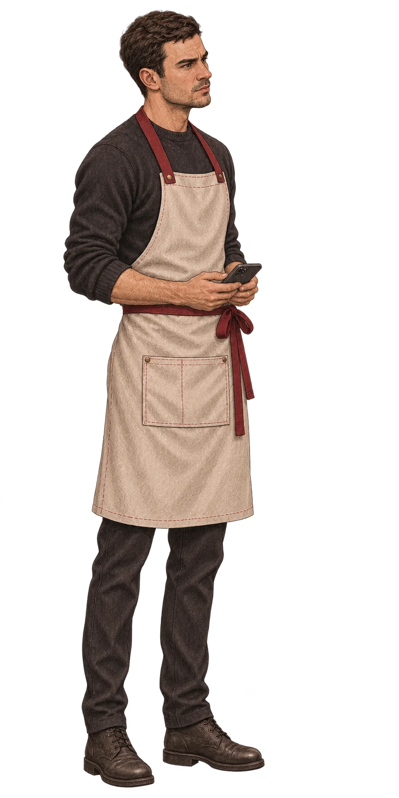

Практика в диалоге
Кофейня «Север»
Илья готовит веранду к открытию. Помогите выбрать чашки, согласовать поставку и разобраться с прежним заказом. Шесть решений изменят разговор и его результат.
О примере
Имена, ситуации, цены, остатки и результаты пробы вымышлены. Это отдельный кейс: 60 новых чашек и замена шести чашек прежней серии. Условия замены и скидок в игре не устанавливают правила компании.
КОФЕЙНЯ «СЕВЕР»
СЦЕНА 1 / 13☆☆☆☆☆☆

Илья, управляющий
Звёзды отмечают решения по делу. Можно попробовать другую реплику и сравнить реакцию клиента.